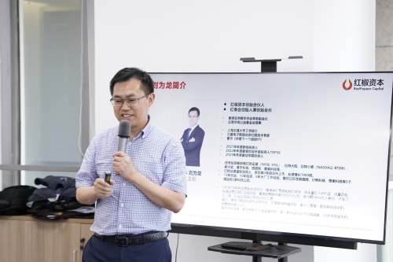
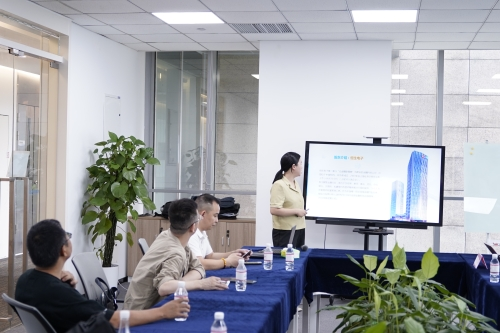
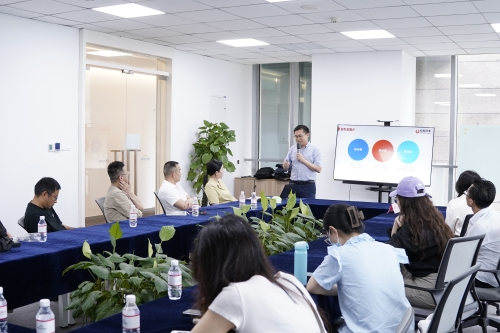

嘉宾简介
刘为龙
红椒资本创始合伙人、红角会创始人兼创始会长、香港亚洲青年协会常务副会长、云南华商公益基金会理事、上海交通大学工学硕士、三星电子韩国总部归国技术专家。
2021年年度新锐投资人、2022年年度最受欢迎天使投资人TOP30、2023年年度最佳早期投资人。
优秀投资案例：叮咚买菜（NYSE:DDL）、比特大陆、比特小鹿（NASDAQ”BTDR）、薪太软、麦杰科技、微报账、墨案科技等。

7月12日 ，一场聚焦于创业公司从起步到上市过程中资本运作策略与实战案例的科创沙龙，在恒生科技园上海运营中心成功举办。本次活动特别邀请到了知名投资人、红椒资本创始合伙人及红角会创始人兼创始会长刘为龙先生，作为分享嘉宾，他以其深厚的行业经验和独特的洞察力，为在场的创业者和投资人带来了一场思想盛宴。
活动伊始，刘为龙先生通过自身丰富的投资经历，阐述了创业企业在不同发展阶段面临的资本需求和挑战。他强调，融资是创业者的必备能力。刘为龙先生结合多个成功案例，生动地讲解了如何在早期阶段吸引天使投资，中期如何通过风险投资加速成长，以及最终如何筹备并完成IPO上市，实现企业价值的最大化。其中，其红椒资本投资案例中的“叮咚买菜”，引起了现场听众的浓厚兴趣。在分享环节中，刘为龙先生还为创业者讲解了如何写商业计划书BP，企业上市应该经历哪些流程和需要哪些机构等热门话题。


随后的问答环节，刘为龙先生耐心解答了与会者的提问，就创业团队建设、市场定位、商业模式优化、以及如何应对行业周期性波动等话题进行了深入探讨。他鼓励创业者要保持对市场的敏锐度，勇于面对挑战，同时也提醒他们要注意资本运作的合规性和风险管理。
本次沙龙不仅为创业者提供了宝贵的实践经验，也为投资人打开了新的视野。参与者纷纷表示，恒生科技园科创沙龙的智慧技术含量高，刘为龙先生的分享让他们对创业过程中的资本运作有了更深刻的理解，对于规划自己的创业之路具有重要的指导意义。
活动最后，主办方对刘为龙先生的精彩分享表示了诚挚的感谢，并期待未来能够有更多类似的交流机会，促进科技创新与资本市场的深度融合，共同推动区域经济的繁荣与发展。